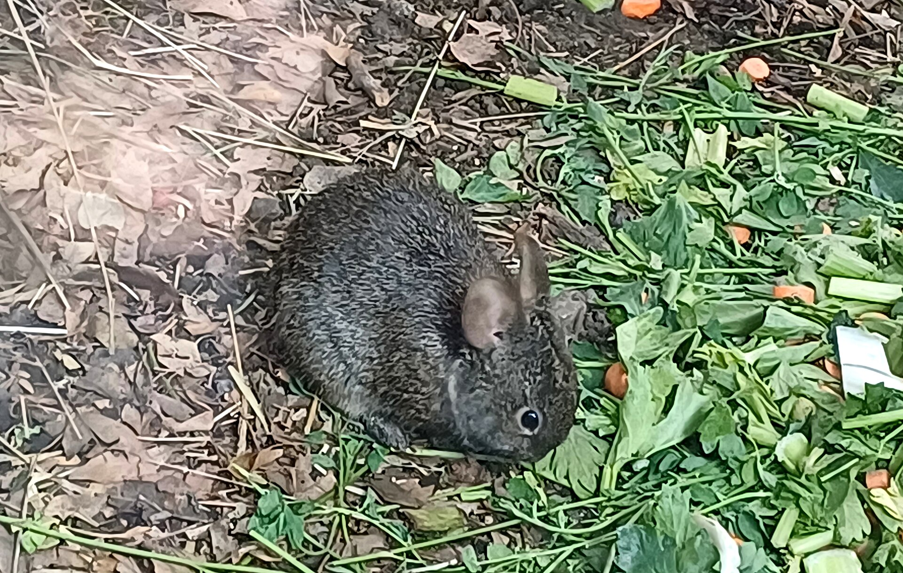
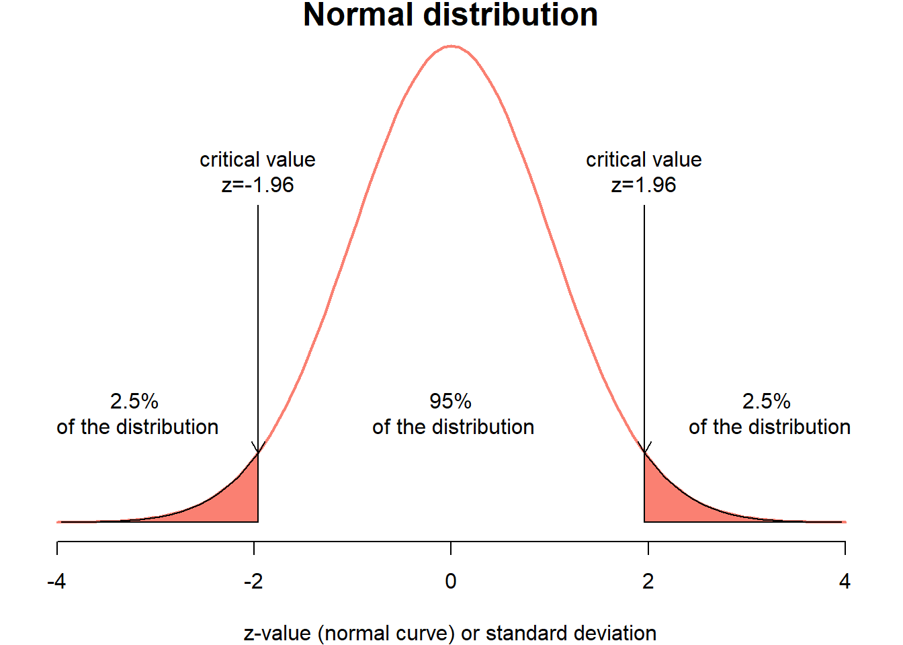
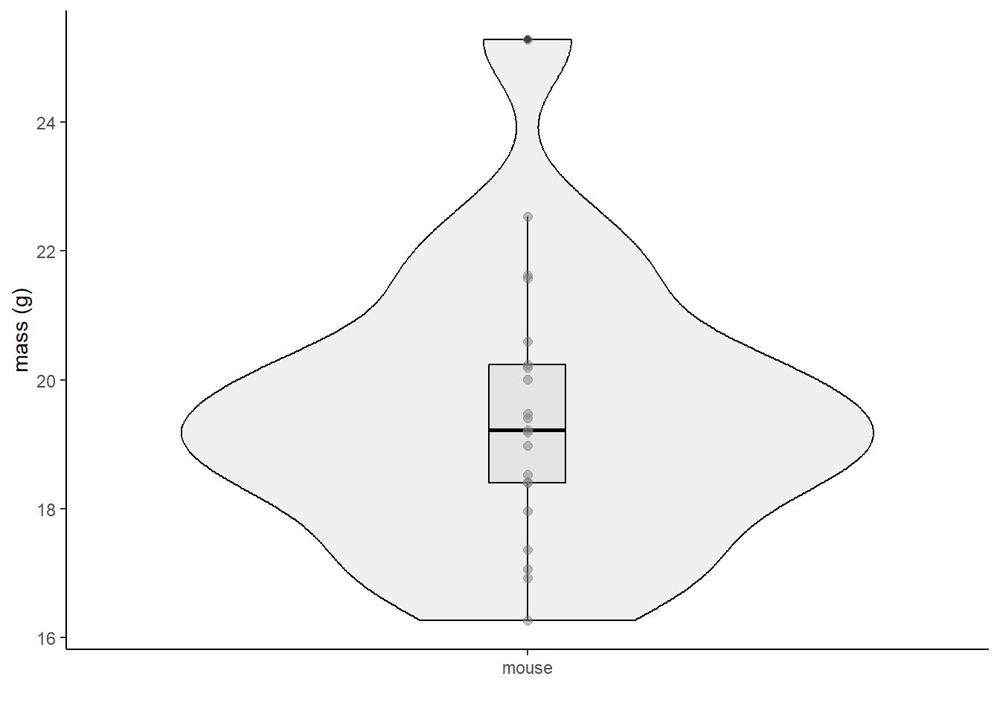
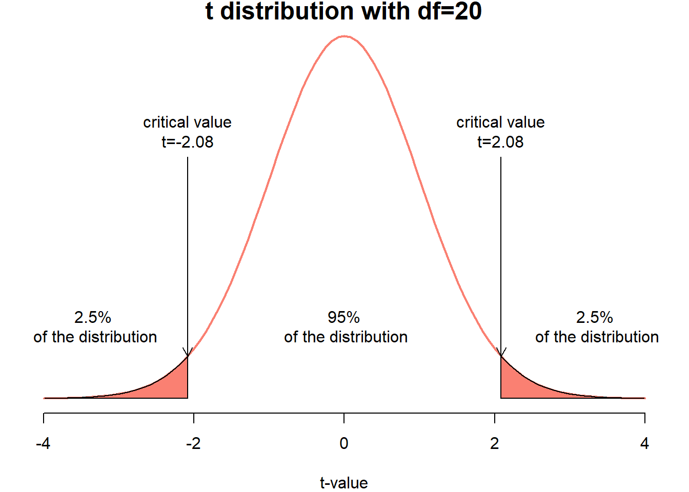
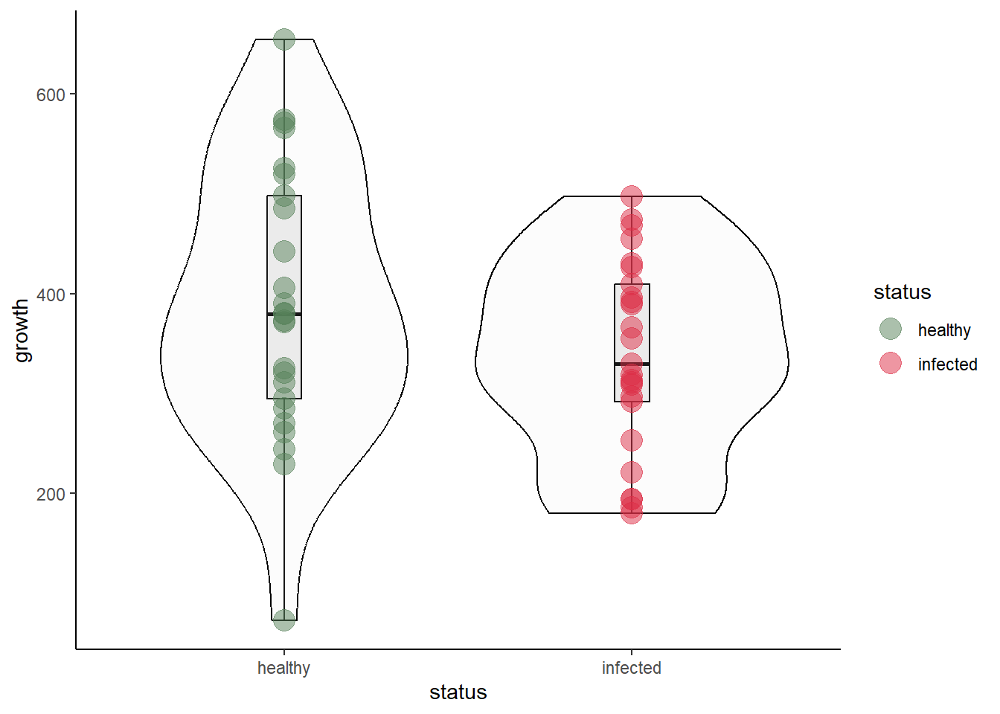

| individual | temperature |
|---|---|
| 1 | 98.4 |
| 2 | 98.6 |
| 3 | 97.8 |
| 4 | 98.8 |
| 5 | 97.9 |
| 6 | 99.0 |
| 7 | 98.2 |
| 8 | 98.8 |
| 9 | 98.8 |
| 10 | 99.0 |
| 11 | 98.0 |
| 12 | 99.2 |
| 13 | 99.5 |
| 14 | 99.4 |
| 15 | 98.4 |
| 16 | 99.1 |
| 17 | 98.4 |
| 18 | 97.6 |
| 19 | 97.4 |
| 20 | 97.5 |
| 21 | 97.5 |
| 22 | 98.8 |
| 23 | 98.6 |
| 24 | 100.0 |
| 25 | 98.4 |
Critical Thinking Assigment 2: Hypothesis tests
What you need to complete this assignment:
R and RStudio 💻
Excel 💻
What you will submit:
R code You can submit your R Script or copy and paste your code
Word document You can submit a word document with your answers to questions (e.g., decisions etc)
Excel File.
Continuation of work!
In this assignment you will continue the work you have done for:
In Class Assignment 2 (We did this a while ago!)
One sample t-test (last Wednesaday)
Objective of this assignment
1. Learning to select tests, run them and make recommendations
In this assignment you will be presented with real-world problems related to natural resources management. So far in class we have been presented with a management or research problem, and we have been working together on the following steps:
More steps!
Here I am showing you 7 steps! This is not different than the 4 steps we have talked about in class
Step 1: State the Null Hypothesis.
Step 2: State the Alternative Hypothesis.
Step 3: Set α
Step 4: Select and calculate a test statistic.
Step 5: Estimate P
Step 6: Based on steps 4 and 5, draw a conclusion about H0.
Step 7. Most important step: Make a management recommendation based on your finding!
Section 1 (one sample t-test)
💻Run this exercise in EXCEL
Normal human body temperature, as kids are taught in North America, is 98.6°F. But how well is this supported by data? Researchers obtained body-temperature measurements on randomly chosen healthy people (Shoemaker 1996). The data for 25 of those people are as follows:
You can download the data from Canvas: dataframe.csv
You are testing whether the claim that 98.6 is the average body temperature. Do the following:
Task 1
Write your null and alternative hypotheses
Task 2
Run a t-test! You will do this in Excel. Use the following equation:
\[ t = \frac{ \bar{Y} - \mu}{S.E._\bar{y}} \]
You can use the average function to estimate the mean, the stdev function to estimate the standard deviation. To obtain the Standard error, you have to check the standard error equation! It is available on the last slidshow PDF I uploaded to Canvas.
Report the t value
Task 3
Find a P-value.
Task 3.1 approximate P-value
Read the Statistical Tables section in the Book (page 711)
Read the Student-t distribution section (page 717)
Find an approximate P-value using the table.
Remember! We are doing a two tail test! And degrees of freedom are n-1
Task 3.2 Exact P-value
In Excel use:
= 2*(1-T.DIST(ABS(t),df,TRUE))Make sure to replace t and df with your values!
Task 4
Make your statistical decision
Task 5
💻Run this task in R
Now estimate it in R.
First, calculate the mean using mean(), calculate the s.d. using sd() and calclulate the standard error.
Second, find the real p value using:
2*pt(q = abs(t),df = ,lower.tail = FALSE)Replace t by your t value, and add degrees of freedom.
Task 5.1 Run the whole thing as a test in R
Do the following:
t.test(res$temperature,mu=98.6)Replace x by a vector containing the temperatures.
Assignment Question 1.1
1.1 Upload your Excel and R code
Answer:
1.2 - What was the statistical decision?
1.3 Is it easier to do in R or in Excel
1.4 - Based on the reading, how are statistical tables used?
Section 2
In Class Assignment 2 (Cows)
Dairy Farm🐄
A dairy farm 🐮 in Wisconsin has purchased a new dietary supplement that claims to increase the milk production. The farm has 1,000 cows, and they are giving the supplement to half of them.
After a while, you decide to measure the amount of milk production in 40 cows taking the supplement, and in 40 cows that are not taking the supplement.
Please download the datasets from Canvas.
Read them into R and convert them into a vector. Look at the following code:
(You can copy the code)
CowControl<-read.csv("CowControl.csv")
CowSupplement<-read.csv("CowSupplement.csv")
CowControl<-CowControl$x
CowSupplement<-CowSupplement$xStep 2.1
Use the sample() function to sample 40 individuals from the CowControl object. Name this object control. Use the sample() function to sample 40 individuals from the CowTreatment object. Name this object treatment.
Then, copy and paste the following code, to run your t test! Easy! 😃
t.test(control,supplement, var.equal = T)Assignment Questions 🐮
Assignment Question 2.1
Upload your R code
Answer:
Based on your test, make a statistical decision. Does the supplement have an effect?
Assignment Question 2.2
New information:
The supplement costs $30.00 for 1,000 g.
Each cow needs to take 100 g. each day
The farm sells each liter of raw milk to a processing facility at $1.00
Does this new information changes your recommendation?
Write a new report to the owner. Include the potential earnings (or losses) of investing in this supplement
Think about it 🧠
Why can some information about our system (animal, plant, or resource we are studying) affect the decisions we make. Why don’t we focus solely on the statistical test?
Section 3. Teporingos 🐇
The teporingos (also known as Volcano Rabbits) are one of the smallest rabbits in the world. The rabbit is native to four volcanoes near Mexico City.

You have set traps, and captured individuals from two populations (two of the volcanoes). You boss asks if the individuals from one of the volcanoes (Popocatepetl) are smaller than those from the Pelado Volcano . Download the teporingos.csv data set and answer the questions.
Dataset includes:
mass is the individuals weight in grams
population has two options for two volcanoes: Popocatepetl and Pelado
Assignment Question 3.1 🐰
Using the Null Hypothesis Statistical Test (NHST) steps learned in class, write a short report explaining to your boss whether the Popocatepetl individuals are smaller than those from Pelado
Also, let me know what statistical test you used and why
Finally, you have been asked with solving one more problem. The Mexico City zoo has a group of Teporingos that are all born in captivity, but their strain is originally from a population in the Iztaccihuatl volcano. They are wondering if the mass of the Teporingos in captivity is different from the mean mass of individuals fro Iztaccihuatl.
Unfortunately, you do not have data on that population. But a literature search shows that the mean mass in that population is 56.8 grams. Perfect! You have a sample of 32 individuals from the zoo, and their masses. Download the teporingoszoo.csv file and answer
Assignment Question 3.2 🐰
Write a short report explaining whether the captivity individuals are different in size than the wild population
Section 4: One sample T-test in R
⚠️I am giving you the code for this section. Do not submit your code, just answer the questions!
How to find critical values in R
We can find the critical values in R. Take for example the normal distribution.
Take for example the following plot (made entirely in R:

It shows us the normal distribution and the z-values that give us the probabilities on left tail of the distribution and on the right tail of the distribution.
We can obtain these values using:
qnorm(0.025)[1] -1.959964qnorm(0.975)[1] 1.959964We can also obtain the probabilities for certain critical values:
pnorm(1.96)[1] 0.9750021pnorm(-1.96)[1] 0.0249979This is clearly faster than looking at tables!
We can also run t-tests in a variety of ways. In this example, I will show you two ways:
Section 4.1 Lab mouse 🐭
The Jackson Laboratory (Bar Harbor, ME) shipped you some lab mice 🐁 from the C57BL/6J strain. You chose this specific strain because their mean mass at 21 weeks is 20.2 grams, which is important for your experiments. However, you suspect your mice set might have a different weight, so, you take a random sample of 21 individuals to check.
Download the “mousedata.csv” file and load it in an object named mousedata and inspect it.
I will teach you how to run the t-test in R. However, it is up to you to make sure you are following the NHST steps when replicating this on your computer!
Let’s look at the data:
mousedata<-read.csv("mousedata.csv")
mousedata<-mousedata$x
df1<-data.frame(mousedata,mouse="mouse")
ggplot(data=df1,aes(x=mouse,y=mousedata))+
geom_violin(fill=gray(0.7,0.2),color="black")+
geom_boxplot(fill=gray(0.7,0.2),color="black",width=0.1)+
geom_point(size=2,col=gray(0.5,0.5))+
theme_bw() + theme(panel.border = element_blank(), panel.grid.major = element_blank(),
panel.grid.minor = element_blank(), axis.line = element_line(colour = "black"))+
ylab("mass (g)")+
xlab("")
The relevant hypotheses would be:
\[ Ho : \mu_1 = 20.2 \]
\[ Ha : \mu_1 \neq 20.2\]
We will be doing a t-test. Remember, in a t-test we are essentially estimating the probability of observing a result as (or more) extreme as what we observed given that Ho was true. Essentially, if the actual mean of your mice is 20.2-g, what are the chances of obtaining the sample you did. The further your sample mean is from 20.2, the lower the chances of observing that result.
We will also estimate a “critical value” that corresponds to an \(\alpha\) of 0.05.
We cannot use 1.96 because our sample is small (and we are doing a t-test). So we use the student’s t!
We will use the following code to obtain our critical value:
alpha<-0.05
qt(c(alpha/2, 1-alpha/2), df=21-1)[1] -2.085963 2.085963This looks a bit different. Remember? We need degrees of freedom to obtain our critical value in this distribution
Our degrees of freedom are n-1. And our critical values are -2.08 and 2.08.
Essentially, our critical values show the following:

This is the t-distribution for our example.
Traditional Way
We can estimate the actual t-statistic using an equation:
\[ t = \frac{\bar{y} - \mu_0}{\frac{s}{\sqrt{n}}} \ \ \ \ \ \text{where} \ \ \ \ \ \frac{s}{\sqrt{n}} = \frac{\sqrt{\frac{1}{n-1}\sum^n_{i=1}(y_i - \bar{y})^2}}{\sqrt{n}} \]
Let’s do this. It looks super complicated, but R is doing all the heavy lifting.
1- Obtain the mean of the mouse mass
y_bar<-mean(mousedata)2- Obtain the standard error
se_y <- sd(mousedata)/sqrt(length(mousedata))3- Calculate t statistic
t_stat <- (y_bar - 21)/se_y
t_stat[1] -3.307546And remember the critical values:
alpha<-0.05
qt(c(alpha/2, 1-alpha/2), df=21-1)[1] -2.085963 2.085963
Assignment Question 4.1🐁
Based on these results, do you reject or fail to reject the null hypothesis?
Using R built in function
t.test(mousedata,mu=20.2)
One Sample t-test
data: mousedata
t = -1.5575, df = 20, p-value = 0.135
alternative hypothesis: true mean is not equal to 20.2
95 percent confidence interval:
18.53451 20.44159
sample estimates:
mean of x
19.48805
Assignment Question 4.2 🐁
Interpret the output you got from R
Where the results the same?
🧠 Critical Thinking Question: Tuna 🐟
First off, download the file named tunadata and save it:
tunadata<-read.csv("tunadata.csv")
head(tunadata)| growth | status |
|---|---|
| 474.6 | infected |
| 313.4 | infected |
| 194.2 | infected |
| 442.3 | healthy |
| 72.4 | healthy |
| 406.0 | healthy |
Here we have data of wild caught tuna that is 15 years old🐟. We have measured the “size” (total length (cm) of the tuna, and recorded whether they are healthy, or they are infected by a parasite that you suspect affects growth.
Let’s plot the data:
ggplot(data = tunadata, aes(x = status, y = growth)) +
geom_boxplot(fill=gray(0.7,0.25),color="black",width=0.1) +
geom_violin(fill=gray(0.9,0.1),color="black")+
theme_bw() + theme(panel.border = element_blank(), panel.grid.major = element_blank(),
panel.grid.minor = element_blank(), axis.line = element_line(colour = "black"))+
geom_point(aes(color = status), size = 5, alpha = 0.5)+
scale_color_manual(values=c("#57825a","#dd2e46"))
And run a 2-sample t-test:
t.test(growth ~ status, data = tunadata,
var.equal = T , paired = FALSE,
alternative = )
Two Sample t-test
data: growth by status
t = 1.5542, df = 48, p-value = 0.1267
alternative hypothesis: true difference in means between group healthy and group infected is not equal to 0
95 percent confidence interval:
-15.19865 118.71065
sample estimates:
mean in group healthy mean in group infected
390.156 338.400
Assignment Question 4.3 🐟
- The test shows we fail to reject the null hypothesis. This is troublesome, because you did some experiments, and found that the parasite affects growth in a very meaningful way, and it also can kill individuals, particularly weaker ones. Think 🧠… why did our experiment failed to see this effect? Write a paragraph with ideas
Send any questions to amolina6@utk.edu